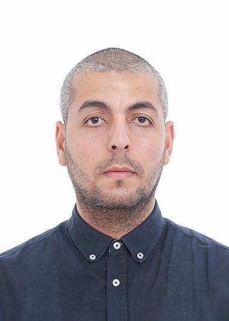

Je consacre beaucoup de temps à mes études et à l'informatique, mais je crois aussi à l'équilibre entre travail et vie personnelle. Voici ce qui me passionne.
Depuis mes premières lignes de code à l'université, la programmation est devenue bien plus qu'un métier : c'est un plaisir quotidien. Résoudre un problème difficile après des heures d'essais reste l'une de mes plus grandes satisfactions.
Je joue au football depuis mon plus jeune âge. C'est pour moi la meilleure façon de rester actif tout en cultivant l'esprit d'équipe et les amitiés. Quand je ne joue pas, je suis les grands matchs à la télévision.
Quitter l'Algérie pour m'installer au Canada a été une grande aventure. J'aime découvrir de nouvelles cultures, de nouveaux endroits et rencontrer des gens de tous horizons — Ottawa est parfaite pour ça.
Ma passion pour le traitement d'image dépasse le cadre académique : je m'intéresse à la photographie numérique, à la vision par ordinateur et à la manière dont les algorithmes « voient » le monde.
Un profil en construction, aligné sur ma formation : développement logiciel, bases de données et technologies web.
C++17/20, RAII, smart pointers, STL, CMake et programmation orientée objet.
Scripting, résolution de problèmes et développement d'outils.
Interfaces graphiques avec Qt Creator et Qt Designer.
PSNR, critères de Linfoot, saillance visuelle Itti-Koch, filtres de Gabor.
MySQL, modélisation relationnelle et requêtes SQL — formation en cours.
Git, GitHub, Linux, GCC/Clang, CMake, VS Code.
Des projets concrets alliant théorie et pratique.
Implémentation de deux approches pour mesurer le bruit dans les images numériques : métriques mathématiques (PSNR, MSE, critères de Linfoot) et modèle perceptuel du Système Visuel Humain (carte de saillance d'Itti-Koch, pyramides gaussiennes, filtres de Gabor, 42 cartes de propriétés). Projet complet avec documentation détaillée.
Application web Jakarta EE 10 permettant de gérer les rendez-vous d'une clinique : réservation de créneaux par les patients, gestion des disponibilités et comptes rendus par les médecins, et administration des spécialités et statistiques.

Je suis étudiant en informatique à La Cité collégiale, à Ottawa. Après une formation universitaire en informatique en Algérie, j'ai choisi de poursuivre mon parcours au Canada pour me rapprocher de l'un des écosystèmes technologiques les plus dynamiques du pays.
C'est en travaillant sur mes premiers projets de traitement d'image que j'ai découvert ma passion pour le développement logiciel. Depuis, je n'ai jamais cessé d'apprendre : C++, Python, bases de données, web — chaque cours et chaque projet est une occasion de progresser.
Études collégiales en cours · Informatique
Formation universitaire en informatique · Algérie
N'hésitez pas à me joindre pour toute opportunité ou collaboration.